Сетевой анализ художественной литературы
Даниил Скоринкин, НИУ ВШЭ

О чем я расскажу
- Что это за сетевой анализ?
- Зачем он литературоведу?
Что за сетевой анализ?
Теория графов

Сеть (граф)
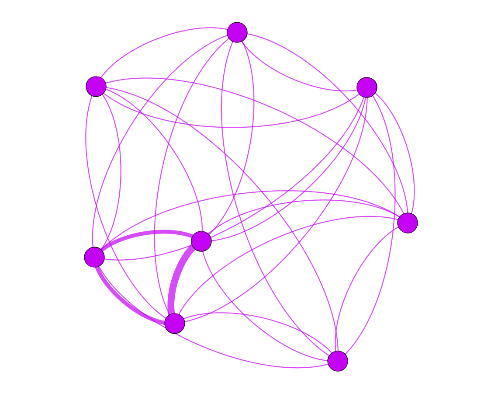Модель транспортная

Метро
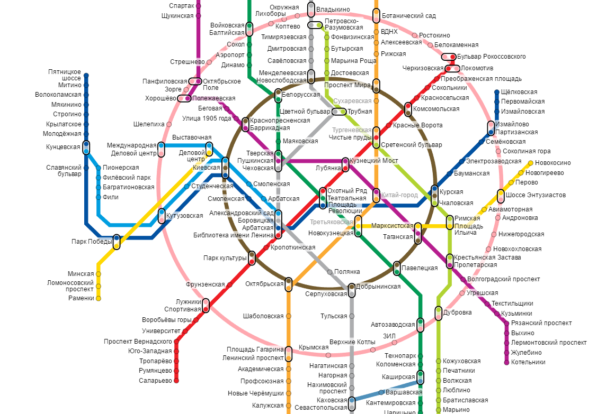Интернет

Модель социальная

"Социограммы" Якоба Морено


 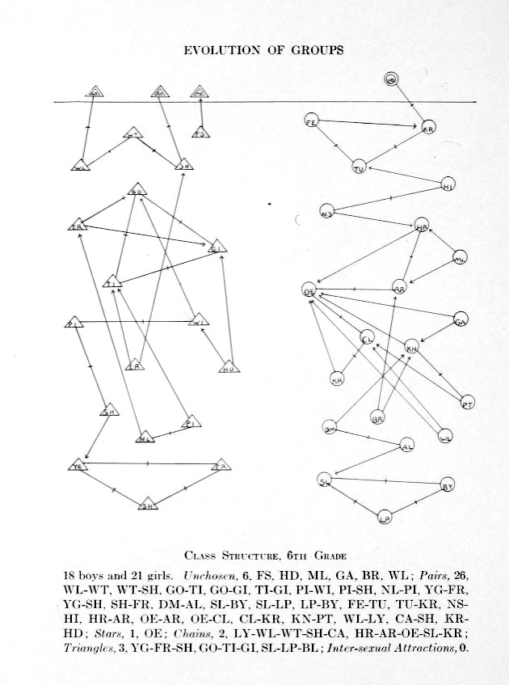
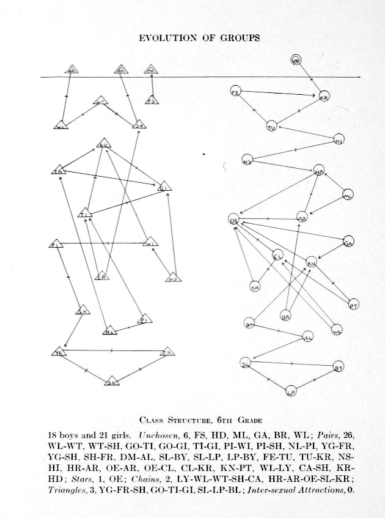


Модель художественная
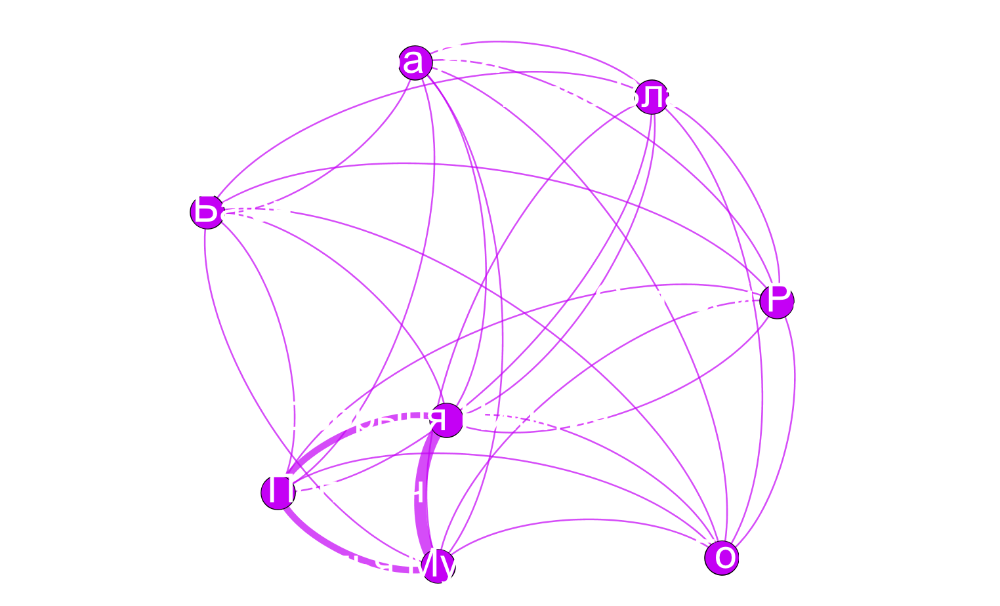Чем хороша такая модель?
- Универсальность (можем сравнить 2 произведения, произведение и экранизацию, произведения на разных языках...)
- Наглядность: многое видно глазами без подсчетов и интуитивно понятно
- (некоторая) точность: за этим «видно глазами» стоят подсчеты
Подсчеты: центральности в сетях
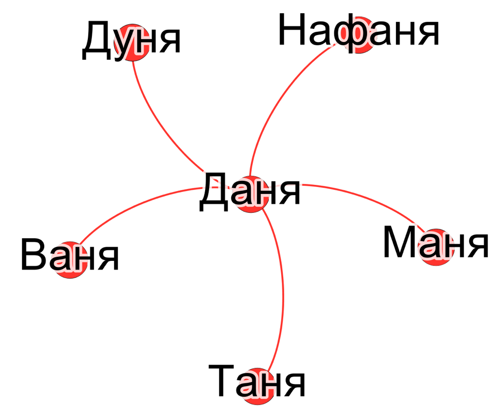| Узел | Центральность (степень, degree) |
|---|---|
| Даня | 5 |
| Таня | 1 |
| Ваня | 1 |
| Нафаня | 1 |
| Дуня | 1 |
Визуализация центральности
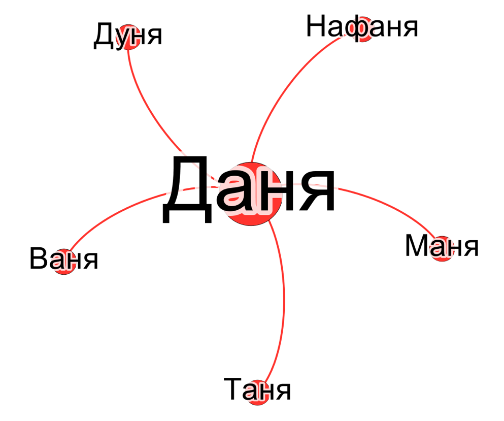Центральность по посредничеству (betweenness centrality)

Центральность по посредничеству (betweenness centrality)

Сети в литературоведении
Франко Моретти и Гамлет

Moretti F. Network theory, Plot analysis (2011)
Моретти ищет "зону смерти" в Гамлете

Франко Моретти, «Теория сетей и анализ сюжета»
Моретти о раскрытии роли Горацио через сети
Though Horatio is an old fixation of mine, I had never fully understood his role in Hamlet until I looked at the play’s network structure.
Franco Moretti. “Distant Reading”

Моретти о раскрытии роли Горацио через сети:
“<..>if we remove, first Hamlet, and then Horatio <..>, then the fragmentation is so radical that the Ghost and Fortinbras — which is to say, the beginning and the ending of the play — are completely severed from each other and from the rest of the plot. Hamlet no longer exists. And yet, Horatio is slightly less central than Claudius in quantitative terms”
Franco Moretti. “Distant Reading”
Проверим через центральности:
| Персонаж | Степень | Промежуточность (betweenness) |
|---|---|---|
| Гамлет | 19 | 219,4 |
| Король (Клавдий) | 16 | 131,6 |
| Горацио | 14 | 176,7 |
Визуализируем:


База данных для таких исследований:

Dracor.org
- Корпуса европейской драмы в едином формате:
- немецкий (502 пьесы)
- русский (211 пьес)
- итальянский (139 пьес)
- ...
- Сети в машиночитаемом виде — для каждой пьесы
- Все открыто и доступно: сам dracor.org, его гитхаб, его API
Можно замечать интересные структуры

Структуры непохожие на то, что было до них

Гете и Шекспир


Теперь это можно делать на русском материале

RusDraCor — часть dracor.org

rus.dracor.org
Приглядимся к Борису Годунову

Примерно как с Гете
Классицизм против "шекспировской пьесы" ?


Важный ли герой Гаврила Пушкин?

Пушкин на посылках и betweenness centrality

Есть ли другие такие же?
Битяговский в «Смерти Иоанна Грозного» А. К. Толстого (двойной агент)

Калачник в «Дмитрие Самозванце» А.Н. Островского (шпион/агент Шуйского)

Немного о Калачнике
Калачник:Что я-то?! Я не сыщик, не доносчик;
Я — весь народ московский; вот кто я!
Немного о Калачнике
«Довольно загадочной кажется фигура Калачника, темпераментно сыгранного Антоном Хомятовым: с одной стороны, это человек из народа — поборник православной веры, мститель за брата, с другой — «человек в штатском», тайный агент Шуйского, провокатор и шпион. Похоже на то, что его торговля калачами только «прикрытие». Один раз за весь спектакль мы видим лоток на его плече, да и то пустой. Калачник называет себя «народом», но он, пожалуй, ох как непрост?»
Битков (соглядатай/двойник Пушкина)
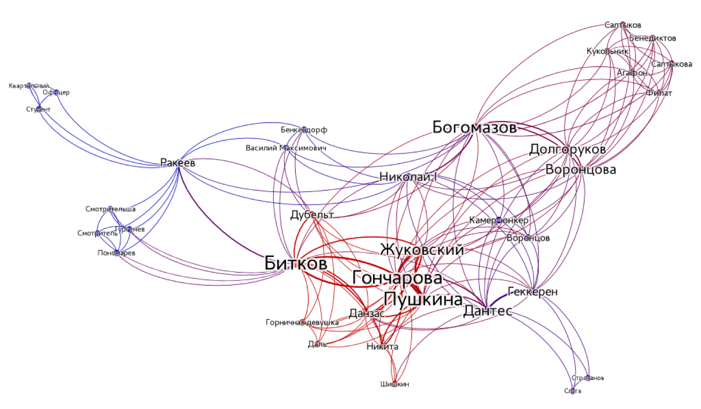Структурные свойства сетей и масштабирование исследований
1. Плотность сети


Плотность = 0.5 (3/6) Плотность = 1 (6/6)
Плотности комедии и трагедии отличаются

Плотности комедий и не-комедий

Осторожно, предварительные данные!
Несколько слов о "Войне и мире"

Целиком (слишком плотно и много)
Том 1 часть 1
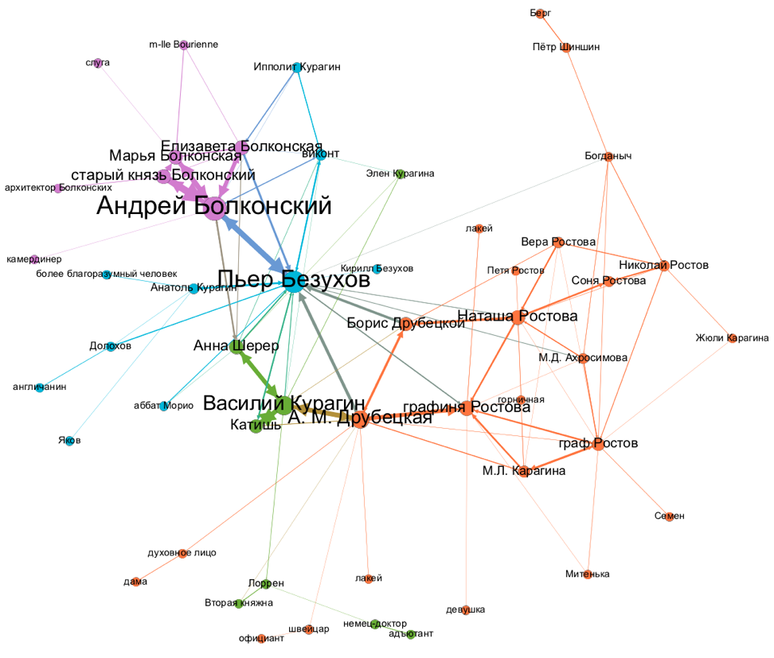Сообщества в сетях!
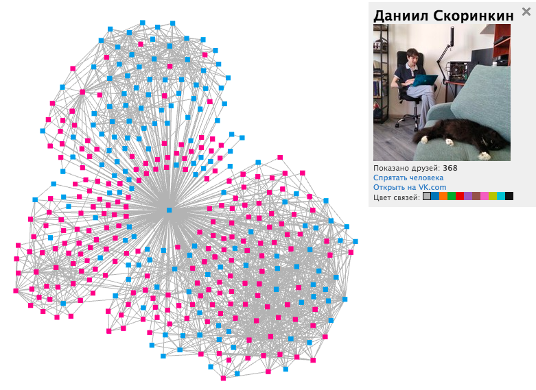Том 1 часть 2

"Промежуточность" адъютантов!
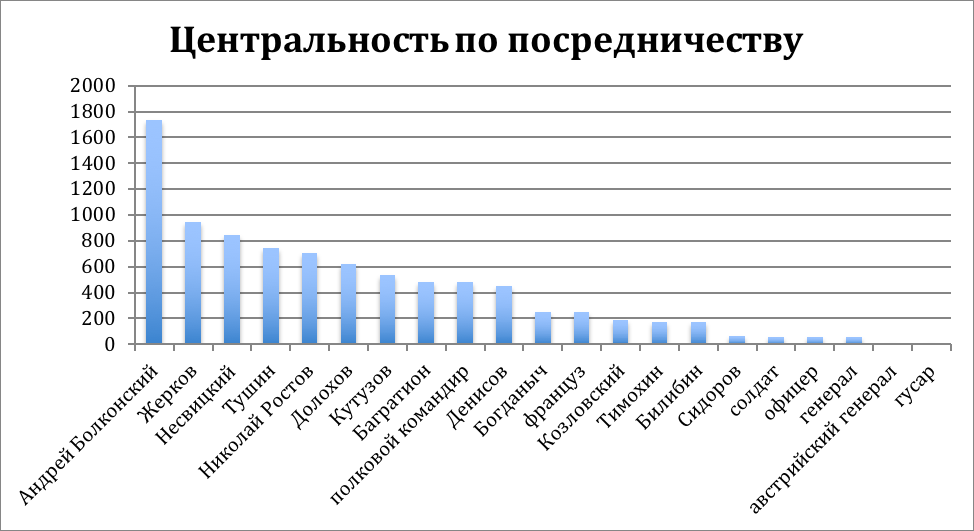Том 2 часть 1 (домашний "Ростовский мир")

Том 3 часть 2 (Бородинское сражение)

Эпилог

Динамика плотности
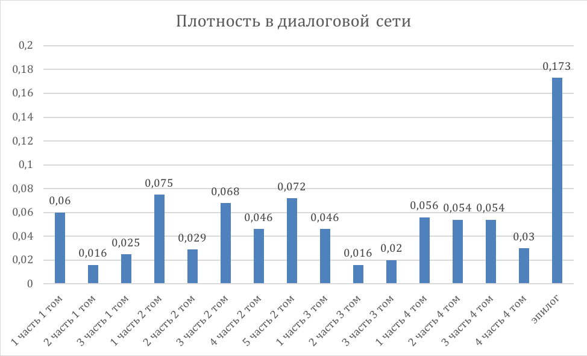